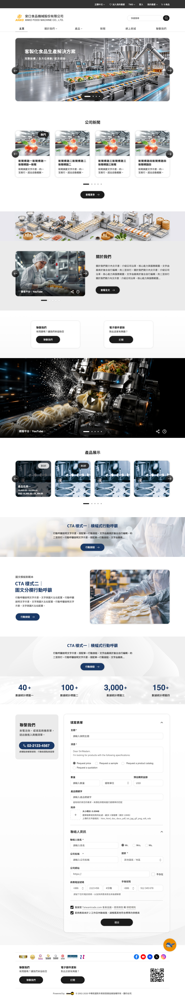
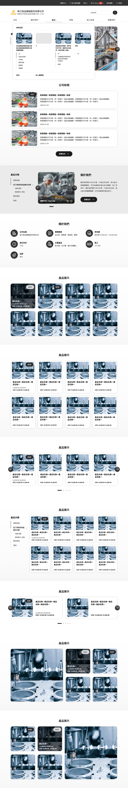
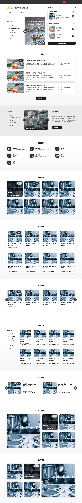
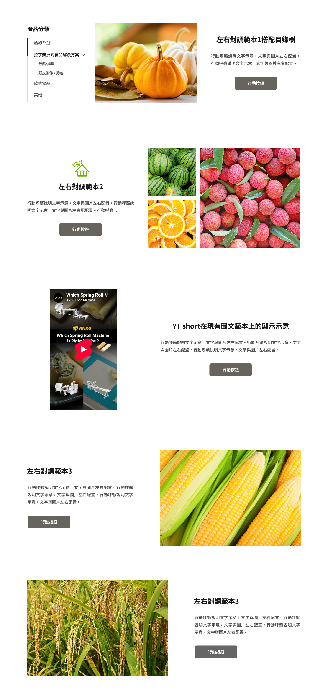

台灣經貿網企業網・建站引導及版型擴充
首頁設計稿確認 × SU 建站引導流程提案
2026 / 08 / 11 凌網科技
過程中任何問題，隨時提出。
| 7/28 第一次訪談 | 白底黑字、參考 Xometry 滿版設計；圓角採正圓膠囊 → 設計基調 |
|---|---|
| 7/31–8/5 貴處補充 | 加色原則（新範本與表單、點綴為主）、YT Short 版位（左影右文）、表單欄位補齊、產品分類樹展示 → 已全數納入設計稿 |
| 今日 | 確認設計稿 → 進入建站引導 |
今天各位看到的設計稿＝上述決議落地的結果。

↕ 圖可捲動；需要細看時開原圖

產品選單展開

購物車展開
↕ 圖可捲動

↕ 圖可捲動
| 版本 | 內容 | 展示位置 |
|---|---|---|
| 版本Ａ | 含聯絡電話（點擊可撥打）＋完整表單 | 設計稿（本頁前） |
| 版本Ｂ | 無電話、表單拉寬置中 | 展示網頁 V2 分頁 |
說明：需求規格書附件一第 7 項載明「補充顯示聯絡電話（不顯示 email）」。
若選版本Ｂ，屬對規格書內容之變更，將載入本次會議記錄，後續以會議記錄為準。
兩版皆可實作，請各位決定。
| # | 項目 | 選項 |
|---|---|---|
| 1 | 認證標章位置 | 移至頁尾／維持頁首 |
| 2 | 線上客服圖示（小鯨魚） | 右下照舊／側邊／頁尾 |
| 3 | 影片載入提醒文字位置 | 影片區塊旁／其他 （文字內容由貴處提供） |
| 4 | Header 右上功能列 | 規格書原載移至頁尾；7/28 會議決議維持原樣——本次複述確認，留於會議記錄 |
以上四項確認後，設計稿即進入修訂與簽版準備。
廠商要建立首頁，同一個區塊的設定散落三處：
做到哪、還剩什麼，看不出來；第一次發布前，前台接近空白頁。
需求規格書要求：首頁資料編輯與版型配置整合於同一頁面（附件一第 2 項）。
以下切換至原型，實際走一遍「廠商第一次啟用」：
看完原型後，有三項細節想請教各位。
| # | 問題 | 選項 |
|---|---|---|
| 1 | 預置清單的「公司資訊」指哪個元件？ | 關於我們／公司新聞 若為關於我們，預設樣式：簡介圖文／重點資訊欄位 |
| 2 | 未填寫前的佔位素材由誰提供？ | 貴處統一素材／凌網設計通用佔位 未填區塊前台：顯示佔位／先隱藏 |
| 3 | 「關閉英文語系顯示」的開關位置 | 企業網多語設定／其他 （併確認：關閉後前台語言選單的呈現） |
確認後即納入規格書。
謝謝各位。其他問題歡迎現在提出。